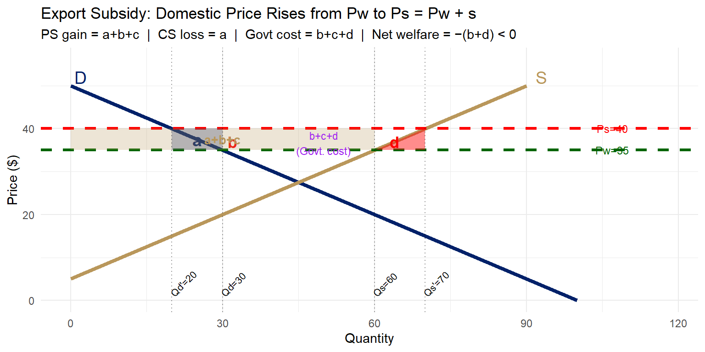

# D: P = 50 - 0.5Q => Qd = 100 - 2P
# S: P = 5 + 0.5Q => Qs = 2P - 10
# Autarky equilibrium: P=27.5, Q=45
# World price Pw=35 (country has comparative advantage, exports)
# At Pw=35: Qd=30, Qs=60, Exports=30
# Subsidy s=5 raises domestic price to Ps=40
# At Ps=40: Qd=20, Qs=70, Exports=50
Pw <- 35; s <- 5; Ps <- Pw + s
Qd0 <- 100 - 2*Pw # 30 (domestic consumption before subsidy)
Qs0 <- 2*Pw - 10 # 60 (domestic supply before subsidy)
Qd1 <- 100 - 2*Ps # 20 (domestic consumption after subsidy)
Qs1 <- 2*Ps - 10 # 70 (domestic supply after subsidy)
# Welfare areas
# a = CS loss (rectangle): (Ps-Pw)*(Qd0-Qd1) = 5*10 = 50
# b = DWL consumption triangle: 0.5*(Ps-Pw)*(Qd0-Qd1) = 25 [already in a's triangle portion]
# Actually: a = full rectangle between Qd1 and Qd0; b = triangle at Qd0 end
# Standard labeling (Salvatore style):
# a = rectangle: Pw to Ps, Qd1 to Qd0 = 5*10=50
# b = triangle (consumption DWL): 0.5*5*10 = 25 -- but let's use numeric polygon
ggplot() +
# ── curves ───────────────────────────────────────────────────────────────────
geom_segment(aes(x = 0, y = 50, xend = 100, yend = 0),
color = "#012169", linewidth = 1.5) + # Demand
geom_segment(aes(x = 0, y = 5, xend = 90, yend = 50),
color = "#B9975B", linewidth = 1.5) + # Supply
# ── price lines ──────────────────────────────────────────────────────────────
geom_hline(yintercept = Pw, linetype = "dashed",
color = "darkgreen", linewidth = 1.2) +
geom_hline(yintercept = Ps, linetype = "dashed",
color = "red", linewidth = 1.2) +
# ── area a: CS loss rectangle (Qd1→Qd0, Pw→Ps) ──────────────────────────────
annotate("polygon",
x = c(Qd1, Qd0, Qd0, Qd1),
y = c(Pw, Pw, Ps, Ps),
fill = "#012169", alpha = 0.30) +
annotate("text", x = (Qd1+Qd0)/2, y = (Pw+Ps)/2,
label = "a", size = 5, fontface = "bold", color = "#012169") +
# ── area b: DWL consumption triangle ─────────────────────────────────────────
annotate("polygon",
x = c(Qd1, Qd0, Qd1),
y = c(Ps, Pw, Ps),
fill = "red", alpha = 0.45) +
annotate("text", x = Qd0 + 2, y = Pw + 2,
label = "b", size = 4.5, color = "red", fontface = "bold") +
# ── area a+b+c: PS gain (0→Qs0, Pw→Ps rectangle) ────────────────────────────
annotate("polygon",
x = c(0, Qs0, Qs0, 0),
y = c(Pw, Pw, Ps, Ps),
fill = "#B9975B", alpha = 0.25) +
annotate("text", x = Qs0/2, y = (Pw+Ps)/2,
label = "a+b+c", size = 3.5, fontface = "bold", color = "#B9975B") +
# ── area d: DWL production triangle (Qs0→Qs1, Pw→Ps) ────────────────────────
annotate("polygon",
x = c(Qs0, Qs1, Qs1),
y = c(Pw, Pw, Ps),
fill = "red", alpha = 0.45) +
annotate("text", x = Qs0 + 4, y = Pw + 2,
label = "d", size = 4.5, color = "red", fontface = "bold") +
# ── govt cost label ──────────────────────────────────────────────────────────
annotate("text", x = (Qd1+Qs1)/2 + 5, y = (Pw+Ps)/2 - 0.8,
label = "b+c+d\n(Govt. cost)", size = 3, color = "purple") +
# ── vertical reference lines ─────────────────────────────────────────────────
geom_vline(xintercept = c(Qd1, Qd0, Qs0, Qs1),
linetype = "dotted", alpha = 0.4) +
annotate("text", x = Qd1, y = 1.5,
label = paste0("Qd'=", Qd1), size = 2.8, angle = 45, hjust = 0) +
annotate("text", x = Qd0, y = 1.5,
label = paste0("Qd=", Qd0), size = 2.8, angle = 45, hjust = 0) +
annotate("text", x = Qs0, y = 1.5,
label = paste0("Qs=", Qs0), size = 2.8, angle = 45, hjust = 0) +
annotate("text", x = Qs1, y = 1.5,
label = paste0("Qs'=", Qs1), size = 2.8, angle = 45, hjust = 0) +
annotate("text", x = 107, y = Pw,
label = paste0("Pw=", Pw), size = 3.2, color = "darkgreen") +
annotate("text", x = 107, y = Ps,
label = paste0("Ps=", Ps), size = 3.2, color = "red") +
annotate("text", x = 2, y = 52, label = "D", size = 5, color = "#012169") +
annotate("text", x = 93, y = 52, label = "S", size = 5, color = "#B9975B") +
scale_x_continuous(limits = c(0, 118)) +
scale_y_continuous(limits = c(0, 56)) +
labs(
title = "Export Subsidy: Domestic Price Rises from Pw to Ps = Pw + s",
subtitle = "PS gain = a+b+c | CS loss = a | Govt cost = b+c+d | Net welfare = −(b+d) < 0",
x = "Quantity", y = "Price ($)"
) +
theme_minimal(base_size = 11)